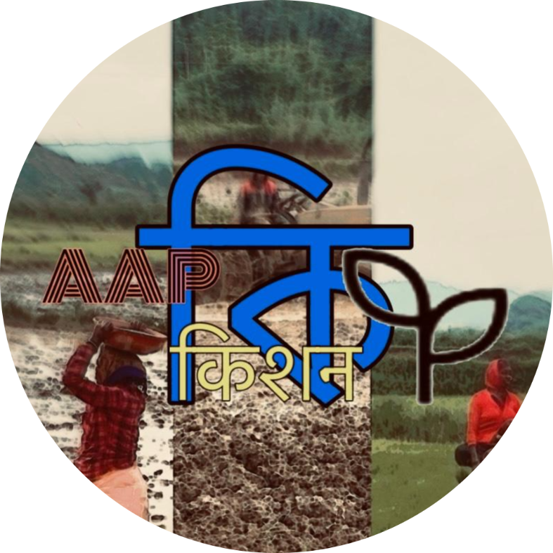

Our Information
About Us



APPকিकिशन is a mobile app and web application for market rate of agricultural crops, vegetables of land area and collection of baseline land based data to ensure right benefits reach the right beneficiaries and there is transparency in the system. It is a user-friendly platform that enables valuable insights for improved market rate and evidence-based monitoring. AAPকিकिशন platform will help the users to view the consolidated and comprehensive information pertaining to farmer’s agriculture market rate across the country.
Member since 2024